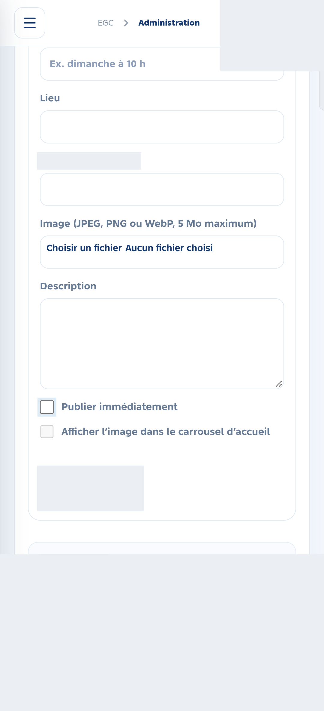
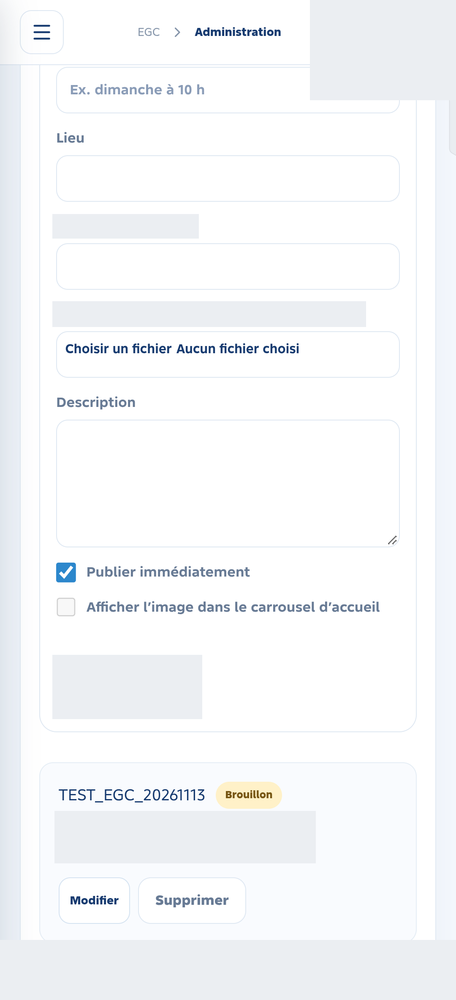
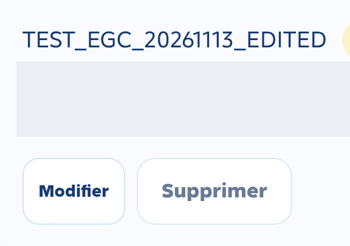
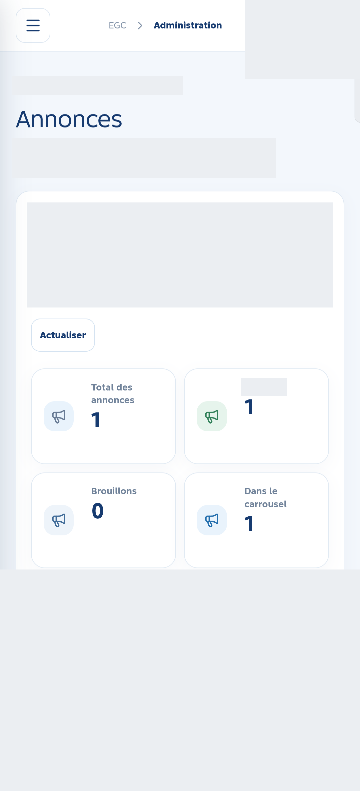

Preuves — état et formulaire
Captures réalisées sur l’appareil; les informations non nécessaires au test ont été masquées.


Synthèse des campagnes fonctionnelles et Administration — 12 et 13 novembre 2026
Selon la clarification du responsable, Annonces est le seul module Admin actuellement actif. Les écrans d’administration correspondant aux versions futures, ainsi que les rubriques publiques « Bientôt disponible » (dont Inscription, Dons et Bibliothèque), sont exclus du périmètre et ne sont pas déclarés en échec.
Les captures sont expurgées des textes de dossiers et informations personnelles. Aucun export de données personnelles, paiement, don, envoi ou publication n’a été déclenché.
| ID | Scénario | Résultat observé | Statut |
|---|---|---|---|
| ADM-01 | Ouverture du module Annonces | La page de synthèse s’affiche. Session Admin existante utilisée; la saisie des identifiants n’a pas été retestée. | Réussi |
| ADM-02 | Création d’un brouillon temporaire | Un contenu explicitement marqué TEST a été créé sans image, sans carrousel et avec « Publier immédiatement » décoché. Le statut « Brouillon » était visible. | Réussi |
| ADM-03 | Modification du brouillon | Le titre du seul brouillon de test a été modifié; son statut est resté « Brouillon ». | Réussi |
| ADM-04 | Nettoyage du test | Le brouillon temporaire a été supprimé. Le titre de test est absent; les compteurs sont revenus à Total 1, Brouillons 0, Carrousel 1. | Réussi |
| ADM-05 | Option de publication par défaut | « Publier immédiatement » est cochée par défaut dans le formulaire vierge; après une sauvegarde, le formulaire réinitialisé revient à cet état. L’option a été décochée avant la création du brouillon. | Point de vigilance |
| ADM-06 | Confirmation de suppression | La confirmation n’a pas été visible dans l’arbre d’accessibilité pendant cet essai automatisé. La suppression du seul brouillon test a été confirmée par son absence et le retour des compteurs initiaux. | Vérification limitée |
| Parcours | Résultat observé | Statut |
|---|---|---|
| Filtres Événements | « Tous » et « Culte » affichent chacun 1 événement. Formation, Prière, Spéciaux et Retraite affichent 0 avec l’état vide prévu. | Réussi |
| Détail Célébration | La fiche affiche le type Culte, la date du dimanche 8 novembre, 9 h 30 et le lieu Yashab. | Réussi |
| Carte de Brazzaville | « Voir sur la carte » ouvre la fiche de l’église dans Google Maps. Aucun itinéraire ni partage de position n’a été lancé. | Réussi |
| Écran Live — capture terrain | Capture fournie par l’utilisateur, réalisée sur le terrain avec un Camon 50 Pro : écran Live, « Direct en cours » et lecteur YouTube visibles. L’icône lecture reste affichée; l’image seule ne confirme pas la lecture audio/vidéo effective. | Preuve partielle |
Ce document est un complément et ne remplace ni ne réécrit les résultats précédents. La trame de tests et le rapport d’homologation conservé : rapport-homologation-v1-epure.pdf. La preuve historique Live du 8 novembre figure dans le dossier des preuves précédentes.
Décision : résultats fonctionnels antérieurs et essais Admin Annonces consignés; vigilance sur la case de publication par défaut et limite d’observation de la confirmation de suppression.
Scénarios repris du rapport et de la trame du 12 novembre 2026; ils ne sont pas présentés comme de nouveaux essais du 13 novembre.
| ID | Scénario | Résultat observé | Statut |
|---|---|---|---|
| W-01 | Navigation web mobile | 21 routes ont répondu HTTP 200 au viewport 390 × 844; aucune erreur JavaScript de page ni aucun débordement horizontal constaté. Certains écrans paresseux nécessitaient une attente. | Réussi |
| W-02 | Événements web | Filtre « Culte » et détail d’un événement (date, lieu, heure) affichés. | Réussi |
| W-03 | Thème | Passage du thème clair au sombre, puis retour au thème clair. | Réussi |
| W-04 | Plan de lecture personnalisé | Le thème « Guérison » a été sélectionné et affiché. Aucune progression n’a été enregistrée; la persistance n’a donc pas été vérifiée. | Partiel |
| A-01 | Lancement Android | L’application a été lancée sur TECNO CN5c; l’affichage plein écran a été observé. | Réussi |
| A-02 | Bible hors connexion | Après coupure temporaire du Wi-Fi et des données mobiles, la bannière hors ligne était visible et Genèse 1 restait consultable. Le réseau a ensuite été rétabli. | Réussi |
| A-03 | Live sans direct actif — 12 novembre | L’état « Aucun direct n’est en cours » et les prédications archivées étaient visibles. | Réussi |
| ID | Scénario | Résultat observé | Statut |
|---|---|---|---|
| A-04 | Fiches de localisation | Brazzaville, Pointe-Noire et Oyo affichaient leurs repères et numéros publics. | Réussi |
| A-05 | Ouverture des itinéraires | Google Maps s’est ouvert pour les trois fiches. Pointe-Noire résolvait vers l’hôtel Elais, repère indiqué; le point exact de l’église n’a pas été confirmé indépendamment. | Partiel |
| A-06 | Capture historique d’un direct — 8 novembre | La capture indique « Direct en cours » et montre le lecteur, sans prouver la lecture effective ni le comportement de la version 1.3. | Partiel |
| A-07 | Plan et historique | Écrans consultés; enregistrement d’une progression et persistance de l’historique non vérifiés. | Partiel |
| A-08 | Rappels | Écran consulté; permission, programmation et réception d’une notification non vérifiées. | Partiel |
| A-09 | Installation fraîche | Non exécutée; seule la mise à jour par-dessus la version déjà installée a été observée. | Non exécuté |
| HORS-01 | Formulaires/modules indisponibles | Inscription, dons, bibliothèque et autres modules Admin réservés aux versions futures sont hors périmètre à la demande du responsable. Aucune soumission, paiement ou modification de données n’a été réalisée. | Hors périmètre |
Les preuves détaillées de la campagne antérieure sont conservées dans le rapport d’homologation et sa trame; ce complément ne remplace pas ces documents.
Captures réalisées sur l’appareil; les informations non nécessaires au test ont été masquées.




Capture fournie par l’utilisateur depuis son Camon 50 Pro. Elle montre l’écran Live et « Direct en cours »; l’icône lecture visible ne permet pas de confirmer la lecture effective du flux.